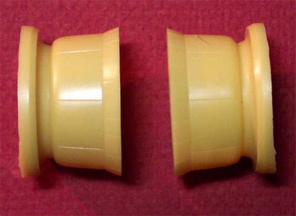

Paragon Designs B-17E 1/48 Scale Conversion kit #4851
Text and images Copyright © 2003 by Matt Swan
Developmental History
The B-17E was the first version of the Fortress to be produced in large numbers. It was the version of the bomber that witnessed the Japanese attack on Pearl Harbor. It was originally designed to correct some of the deficiencies in the earlier Fortresses that had been brought to light as a result of combat reports coming in from Europe. The modifications, which resulted in the B-17E, were destined to turn an airplane that had been a relative failure into an outstanding success.
It is often written that the B-17E was the result of initial experience with the B-17C and D during the first months of combat in 1942 in the Pacific against the Japanese. Other sources report that the B-17E had its origin in the negative experience that the RAF had with the Fortress I (B-17C) over Europe in the summer of 1941. Neither view is correct, since the B-17E was first ordered on August 30, 1940, and the first prototype took to the air on its maiden flight on September 5, 1941.
Modifications being incorporated into the B-17E introduced a completely new rear fuselage with a manually operated turret housing two Browning 50 caliber machine guns fitted in the extreme tail. In order to accommodate the tail gun, the fuselage of the B-17E was a full six feet longer than that of the D. A Bendix electrically powered turret containing two 50-caliber machine guns was installed on the upper fuselage immediately behind the flight deck. Rectangular apertures with removable windows replaced the oval waist positions. A single 50-caliber M2 Browning machine gun could be mounted at each of these windows. A power-operated belly turret replaced the ventral "bathtub" housing of the B-17D. This turret was remotely-controlled by a system of mirror periscopic sights from a Plexiglas bubble below the waist hatches and, in order to achieve better stability during the bomb run, the span of the horizontal tail plane was increased, the vertical tail was greatly increased in area, and a long dorsal fin was fitted in front of the tail. Late versions of the “E” replaced the belly turret with the more familiar Sperry Ball turret.
A total of 512 B-17Es were built. They appeared in the Pacific first, early in 1942, and later in Europe, in July, with units of the 8th Air Force, based in Great Britain. On August 17 these planes made their first raid on the European front, with a daylight-bombing mission to Rouen. Several B-17Es that were provided to England under the famous Lend/Lease Act were assigned to the Coastal Command to supplement the Albacores, Hudson and Swordfish aircraft patrolling the English coastline. Two B-17Es were lost on the Greenland Icecap escorting a flight of P-38s and that is the flight that the “Glacier Girl” was recovered from. A B-17E was used as the test-bed for the use of Allison Engines as replacements for the standard Wright R-1820-65 Cyclone engines.
The Conversion Kit
Paragon Designs produced many fascinating conversion and detail kits during their lifespan but, unfortunately, closed their doors a few years ago. These kits can still be found occasionally at trade shows and on Internet Auction sites with prices that far exceed the original MSRP. A collector sold this particular kit to me for $35.00 US. The Paragon kit I’m looking at today, designed and produced in 1995, is intended to convert the Revell B-17F to an “E” model.
The parts are beautifully cast in a medium yellow resin and show no seam lines or flash. On a close inspection I could not find any micro holes in the parts. The kit is packaged in a plastic bag stapled to a cardboard header. It includes a vacuformed replacement nose cone and the belly gunner’s aiming bubble. The kit does not include replacement windows for the sides of the nose or new windows to mount around the belly gunner’s aiming bubble. These will have to be individually cut from stock sheet. There are four replacement front engine cowlings cast with flaps closed that feature finely engraved panel lines. As these will have a good separation from the rest of the model at the cowl flaps the change from raised to recessed lines will hardly be noticeable.
The “F” model B-17 used an enlarged paddle blade propeller and Paragon gives us replacement blades for each propeller. These are blade replacements ONLY so the modeler must cut each original blade off the hub and install the replacement. This will not only be some fine quality work but will most likely produce a very delicate propeller assembly when completed. There are replacement gun barrels for all gun positions and a remotely operated turret to replace the standard Sperry Ball turret.
The instructions are typical Paragon instructions. They consist of a single photocopied sheet illustrating the positioning of the parts and explaining some options on the belly turret. They tell you to install the kit nose windows then mask over them to create smaller windows. I think I will be better off to sheet over them with stock sheet and cut new window frames to be filled with panes cut from clear styrene stock. They list a few pieces of reference material and list several other B-17 detail and conversion kits produced by Paragon in different scales.
Conclusions
In 1/48 scale this is the only conversion kit out there to produce an “E” version of the B-17. Not only has it been out of production for a few years the required base kit has been out of production even longer. The parts are of exceptional quality and are worth the purchase price, even at collectors rates. Neil Burkill (Owner/Operator of Paragon Designs) is still knocking around out there. Rumor has it that he is playing around in the F1 auto racing circles. Maybe if we all ask real nice like, he will come back and make us some more of his really neat conversion kits. What do you think, Neil?
